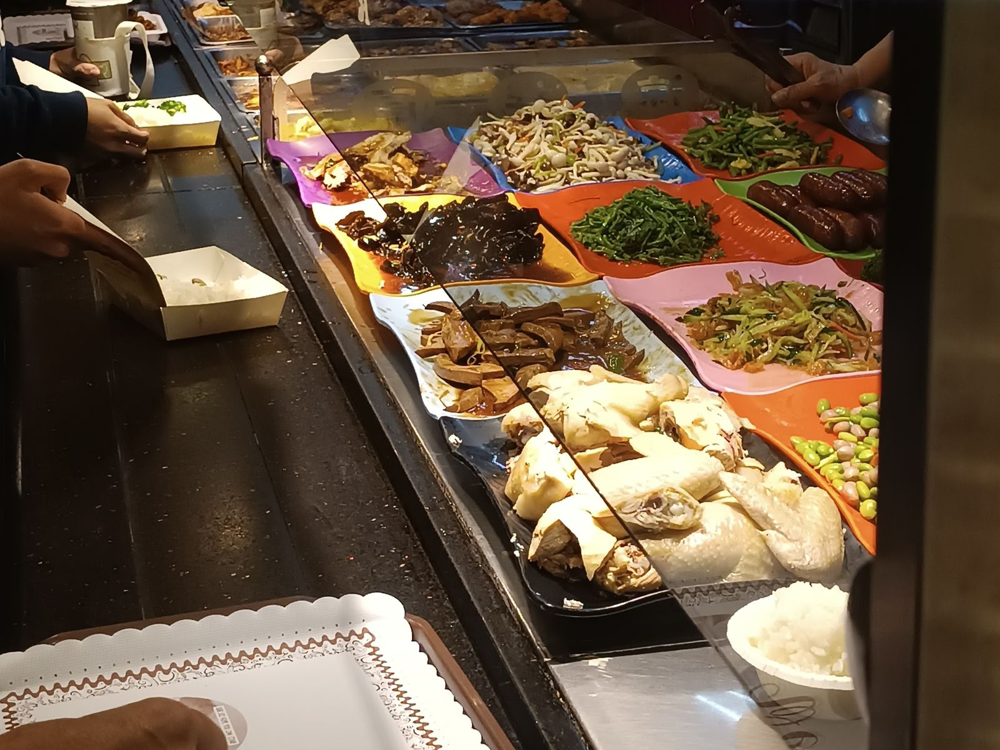
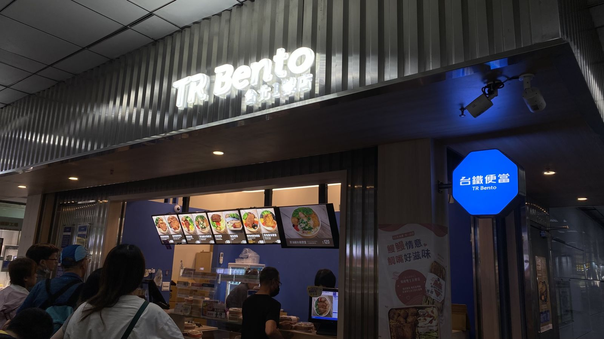

대만 자조찬 식당, 自助餐·便當 검색어로 찾는 법
반찬을 골라 담는 식당은 自助餐, 도시락집은 便當으로 찾고, 계산 방식은 담기 전에 확인하세요.
게시
대만에서 반찬을 직접 골라 담는 식당은 구글맵에서 '自助餐(자조찬)'으로, 도시락집은 '便當(볜당)'으로 검색하면 찾기 쉬워요. 계산은 무게로 재는 가게와 직원이 눈대중으로 매기는 가게가 있어서, 담기 전에 어떤 방식인지 보는 게 좋아요.
여행자 커뮤니티에서 나온 질문을 지자체 소비자보호 안내와 臺鐵便當 공식 사이트로 확인해 정리해봤어요.
01 · 자조찬·도시락집 검색어 한눈에 보기
| 검색어 | 찾을 수 있는 곳 | 참고 |
|---|---|---|
| 自助餐 | 반찬을 직접 골라 담는 식당 | '台式自助餐'이라고 적힌 간판도 많아요 |
| 便當 | 도시락을 파는 가게 | 메인 반찬을 고르면 밥과 곁반찬이 같이 나와요 |
| 素食自助餐 | 채식 자조찬 | 고기를 먹지 않는다면 이 검색어로 |
| 臺鐵便當 | 대만철도 도시락 매장 | 역 안에 있어 이동 중에 사기 좋아요 |
자조찬(自助餐)은 한국의 '뷔페'와 글자는 같지만, 대만 동네 식당에서는 진열대에 놓인 반찬을 내 접시나 도시락 상자에 담고 마지막에 한 번에 계산하는 방식을 말해요. 호텔 뷔페처럼 정액으로 무제한 먹는 곳과는 달라요. 구글맵에서 '自助餐'을 검색하면 근처 가게가 나오고, 사진과 영업시간을 함께 볼 수 있어요. 점심과 저녁 시간에만 여는 곳도 있으니 방문 전 구글맵에 등록된 영업시간을 확인하세요.

02 · 자조찬 계산법, 무게와 눈대중 두 가지
무게로 재는 가게(秤重) 담은 접시를 저울에 올려 무게로 값을 매겨요. 新北市 소비자보호관은 무게로 계산하는 가게라면 손님 쪽에서 무게·단가·총액을 볼 수 있어야 한다고 안내했어요.
눈대중으로 매기는 가게 직원이 담긴 반찬 종류와 양을 보고 값을 매기는 곳도 흔하다고 대만 언론이 전했어요. 같은 양이라도 고른 반찬에 따라 값이 달라질 수 있어요.
비싼 반찬은 따로 표시 소비자보호관은 원가가 높은 반찬을 더 받는 경우 따로 공지해 알리는 방법을 권했어요. 생선이나 큰 고기 반찬 앞 안내문을 한 번 보세요.
궁금하면 계산 전에 묻기 값이 걱정되면 담기 전이나 계산 전에 직원에게 물어보세요. 국물이 많은 반찬은 무게가 늘 수 있어요.
03 · 역에서 사는 臺鐵便當 (2026년 11월 기준)
자조찬 가게를 찾기 어려운 날에는 대만철도(臺鐵) 역 안의 臺鐵便當本舖가 편해요. 공식 사이트에 따르면 타이베이역 1호점은 1층 西3門 옆에 있고, 판매 시간은 09:30~14:00, 14:00~19:00로 나뉘어 있어요. 같은 사이트의 타이베이 메뉴에는 排骨經典便當(갈비 도시락)·雞腿便當(닭다리 도시락)이 NT$100, 控肉便當(삼겹살 조림 도시락)이 NT$120으로 올라 있어요(2026년 11월 기준). 반차오(板橋)·타오위안(桃園) 등 다른 역 매장도 공식 사이트에서 위치와 시간을 볼 수 있어요.

04 · 자조찬 이용할 때 알아두면 좋은 점
줄 서는 방향 보기 보통 쟁반이나 도시락 상자를 먼저 들고 진열대를 따라 이동해요. 앞사람을 보고 같은 방향으로 따라가면 돼요.
밥은 따로일 수 있어요 밥이나 국을 별도로 받는 가게도 있어요. 가게마다 다르니 직원이 밥이 필요한지 물으면 답하면 돼요.
결제 수단은 가게마다 달라요 현금만 받는 곳도 있으니 작은 지폐와 동전을 챙기세요. 이지카드가 되는지는 계산대 표시를 확인하세요.
문제가 생기면 1950 新北市 소비자보호관은 소비 분쟁이 생기면 1950 전국 소비자 서비스 전화로 상담할 수 있다고 안내했어요.
05 · 자주 묻는 질문
대만 자조찬은 무슨 검색어로 찾아요? 구글맵에서 '自助餐'으로 검색하세요. 채식이면 '素食自助餐', 도시락집은 '便當'이 편해요.
자조찬은 무제한 뷔페인가요? 아니요. 동네 자조찬은 담은 만큼 계산하는 방식이라 정액 무제한 뷔페와 달라요.
값은 어떻게 매겨요? 저울로 무게를 재는 가게와 직원이 눈대중으로 매기는 가게가 있어요. 무게로 재는 곳은 손님이 무게·단가·총액을 볼 수 있어야 해요.
臺鐵便當은 얼마예요? 2026년 11월 기준 공식 사이트의 타이베이 메뉴에서 갈비·닭다리 도시락은 NT$100, 삼겹살 조림 도시락은 NT$120이에요.
타이베이역 臺鐵便當은 몇 시까지 팔아요? 공식 사이트에 따르면 1호점은 09:30~14:00, 14:00~19:00에 팔아요. 가기 전에 공식 사이트에서 다시 확인하세요.
메뉴판 한자가 어렵다면 대만 메뉴판 중국어 단어와 구글 번역 카메라로 메뉴판 읽기를 같이 보세요. 臺鐵便當 이지카드 결제는 타이베이 식당 이지카드 결제에 정리해 두었어요. 자조찬 말고 앉아서 먹을 곳을 찾는다면 타이베이 맛집 지도와 타이베이 대만식 맛집을 먼저 둘러보세요. 지도에 있는 野宴食堂도 대만식 가정식을 내는 곳이에요.
지도에서 타이베이 대만식 맛집도 확인해보세요
자조찬 말고 앉아서 먹을 대만식 식당을 지도에서 골라보세요.